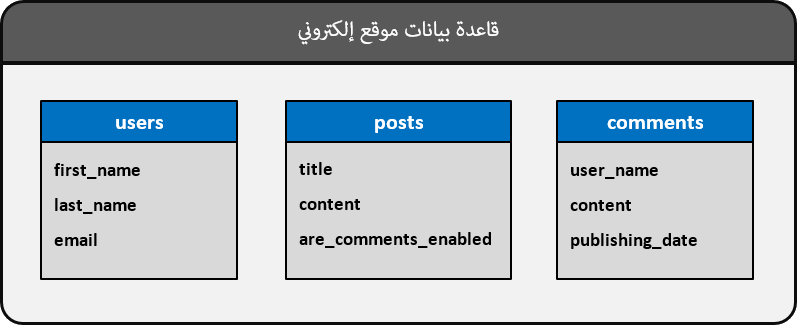
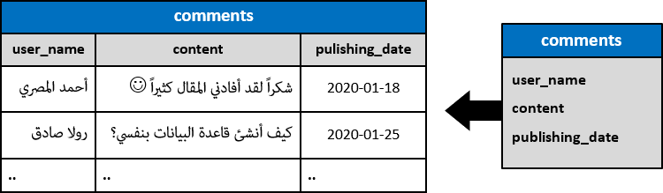

SQLمفاهيم عامة و مصطلحات أساسية في قواعد البيانات
مراحل بناء قواعد بيانات
عندما تقوم بإنشاء قاعدة بيانات, فأنت بذلك تنوي وضع كل معلومات المشروع في هذه القاعدة.
المعلومات التي ستضعها في قاعدة البيانات هي حتماً معلومات لأشياء مختلفة في المشروع و إليك هذا المثال.
المواقع الإلكترونية تحفظ معلومات المستخدمين, مقالاتهم و تعليقاتهم في جداول منظمة تشبه التالي.

ملاحظة: لم نتطرق للطريقة التي يتم فيها ربط الجداول مع بعضها لأن هذا الأمر ستتعلمه لاحقاً و بتفصيل ممل.
أيضاً, المواقع تستطيع حفظ الكثير من المعلومات الأخرى و لكن هذا غير مهم حالياً و لا تشغل بالك به الآن لأنك ستتعلمه في نهاية الدورة.
نلاحظ أن من الرسم السابق أن قاعدة البيانات كأنها مستوعب كبير يتم وضع كل معلومات المشروع فيه.
حتى نرتب المعلومات بشكل منظم و مرتب, نقوم بإنشاء جدول لكل جزئية في المشروع حتى يسهل التعامل و الوصول لها.
سبب إنشاء ثلاث جداول في قاعدة البيانات هو أننا نتعامل مع ثلاث أشياء مختلفة هي:
معلومات كل مستخدم ( في الجدول users ) مثل إسمه, إسم عائلته, بريده الإلكتروني.
معلومات كل مقال ( في الجدول posts ) مثل عنوانه, محتواه, هل يمكن وضع تعليقات عليه أم لا.
معلومات كل التعليقات ( في الجدول Comments ) مثل المعلّق, تاريخ وضع التعليق, محتوى التعليق.
كيف تتخزن المعلومات في الجداول
عند تصميم قاعدة البيانات فإننا نرسمها كما فعلنا في السابق, أي نركز فقط على المعلومات التي سيتم تخزينها و على أساسها نقوم بتقسيم المعلومات عدة جداول.
الآن أنت تتسائل حتماً عن الطريقة التي يتم فيها تخزين البيانات في هذه الجداول و هذا ما سنعرضه لك.
المثال الاول
هنا وضعنا صورة نظهر فيها كيف تتخزن معلومات المستخدمين في الجدول users.
ملاحظة: كل سطر في الجدول يمثل المعلومات الخاصة بمستخدم واحد.
المثال الثاني
هنا وضعنا صورة نظهر فيها كيف تتخزن المقالات في الجدول posts.
ملاحظة: كل سطر في الجدول يمثل المعلومات الخاصة بمقال واحد.
المثال الثالث
هنا وضعنا صورة نظهر فيها كيف تتخزن التعليقات في الجدول comments.
ملاحظة: كل سطر في الجدول يمثل المعلومات الخاصة بتعليق واحد موضوع في الموقع.

مصطلحات أساسية في قواعد البيانات
| المصطلح |
معناه |
| Database |
تعني قاعدة بيانات, وهي عبارة عن ملف يحتوي على عدة جداول مرتبطة ببعضها البعض. |
| Table |
تعني جدول, الجدول يتألف من عدد محدد من الأعمدة و عدد غير محدد من الأسطر.
قاعدة البيانات تتألف من مجموعة جداول. |
|
Field أو Column
|
تعني حقل أو عمود في الجدول, و هو يمثل معلومة لها نوع محدد في الجدول.
فمثلاً يمكن أن تكون هذه المعلومة نص, رقم, صورة, فيديو, صوت, أي ملف من أي نوع.
الجدول الواحد يتألف من عدة حقول. |
| Tuple أو Record أو Row
|
تعني سطر في الجدول, أي مجموعة معلومات. مجموعة المعلومات هذه تمثل سجل في الجدول.
الجدول الواحد يمكن أن يحتوي على عدد غير محدد من السجلات. |
مفهوم القيمة NULL في قواعد بيانات
في البداية, كلمة NULL تعني أنه لم يتم إدخال قيمة في الحقل فقط ( No Value ), أي هي ليست قيمة بحد ذاتها كما يظن البعض.
كمصطلح آخر لها يمكنك اعتبار معنى كلمة NULL هو فارغ أو غير محدد و سترى ذلك بعد قليل.
إفتراضياً, قاعدة البيانات حين تجدك أضفت سطر جديد و لم تملئ جميع الحقول الموجودة فيه تقوم بوضع الكلمة NULL في كل حقل فارغ للإشارة إلى أنه لم يتم وضع قيمة فيه. و إنتبه لنقطة مهمة أيضاً و هي أنك إذا وضعت NULL بنفسك في الجدول فهذا لا يعني أنك أدخلت قيمة, بل يعني أنك حددت بنفسك أن الحقل فارغ.
مثال
إذا قمنا بإدخال معلومات مستخدمين جدد في جدول المستخدمين و لم نملئ جميع الحقول, سيتم وضع الكلمة NULL في الحقول الفارغة كالتالي.
إذا قمنا بقراءة هذا الجدول فسنقرؤه كالتالي:
أحمد لم يتم إدخال إسم عائلته.
وسام لم يتم إدخال بريده الإلكتروني
رولا لم يتم إدخال إسم عائلتها و بريدها الإلكتروني.
المستخدم الأخير لم يتم ذكر إسمه و لكن تم إدخال إسم عائلته و بريده الإلكتروني.
تصنيف الأوامر في SQL
في البداية, هذا التصنيفات لا يهمك إطلاقاً سواء عرفتها أم لا و لكن الطالب قد يحتاج معرفتها لأنه قد يُسأل عنه و لهذا ذكرناها.
الأوامر التي نكتبها في SQL تنقسم لخمس فئات هي: DML - DDL - DQL - DCL - TCL.
الأوامر التي تنتمي لفئة DDL
هي الأوامر التي تستخدم لإنشاء قواعد البيانات و إنشاء كل ما فيها كل الجداول, الحقول, الدوال إلخ..
كل هذا الأوامر تندرج تحت فئة Data Definition Language و التي تختصر بكلمة DDL, و هذه نبذة عنها:
الأمر CREATE: يستخدم لإنشاء قاعدة بيانات, جدول, دالة, فهرس إلخ..
الأمر DROP: يستخدم لحذف قاعدة بيانات, جدول, دالة, فهرس إلخ..
الأمر ALTER: يستخدم لتعديل بنية قاعدة بيانات, جدول, دالة, فهرس إلخ..
الأمر TRUNCATE: يمسح كل السطور الموضوعة في جدول و يعيد رقم التعرفة المستخدم فيها ( Identity ) لقيمته الأولية.
الأوامر التي تنتمي لفئة DML
هي الأوامر التي تستخدم للتعامل مع البيانات التي يتم تخزينها في قواعد البيانات سواء أوامر الحذف منها, الإضافة و التعديل عليها.
كل هذه الأوامر تندرج تحت فئة Data Manipulation Language و التي تختصر بكلمة DML, و هذه نبذة عنها:
الأمر INSERT: يستخدم لإضافة بيانات جديدة في الجدول.
الأمر UPDATE: يستخدم لتحديث بيانات موجودة في الجدول.
الأمر DELETE: يستخدم لحذف بيانات موجودة من الجدول بصورة نهائية.
الأوامر التي تنتمي لفئة DQL
كلمة DQL إختصار لجملة Data Query Language و هذه الفئة تضمن الأمر SELECT الذي يستخدم لجلب البيانات المخزنة في جداول قواعد البيانات.
الأوامر التي تنتمي لفئة DCL
هي الأوامر التي تستخدم للتعامل مع صلاحيات المستخدمين و التي تحدد نوع العمليات التي يمكنهم أن ينفذوها على بنية قاعدة البيانات و محتواها.
كل هذه الأوامر تندرج تحت فئة Data Control Language و التي تختصر بكلمة DCL, و هذه نبذة عنها:
الأوامر التي تنتمي لفئة TCL
هي الأوامر التي تستخدم لضمان أن مجموعة إستعلامات سيتم تنفيذها كلها بدون مشاكل و التراجع عن تنفيذها كلها في حال حدوث أي خطأ في أحدها.
كل هذه الأوامر تندرج تحت فئة Transactional Control Language و التي تختصر بكلمة TCL, و هذه نبذة عنها:
الأمر START TRANSACTION: يستخدم لتحديد أين تبدأ مجموعة الإستعلامات التي نريد أن يتم تنفيذها كلها أو لا يتم تنفيذها في حال حدوث خطأ.
الأمر COMMIT: يستخدم لحفظ التغيرات التي تم إجراؤها و هذا الأمر يستدعى في حال تم تنفيذ جميع الإستعلامات الموضوعة في الـ Transaction بنجاح.
الأمر ROLLBACK: يستخدم لإلغاء كل التغيرات التي تم إجراؤها و هذا الأمر يستدعى في حال لم يتم تنفيذ جميع الإستعلامات الموضوعة في الـ Transaction بنجاح.


 محرر الويب
محرر الويب نظام الألوان
نظام الألوان محول الوحدات
محول الوحدات محلل عناوين الشبكات
محلل عناوين الشبكات